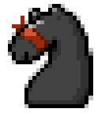

|

tom7.org / chess
Hi! These are some not-very-serious papers I wrote about chess (but, as is my style, the results therein are real): It still seems black has hope in these extremely unfair variants of chess (SIGBOVIK 2014) Elo World: A framework for benchmarking weak chess engines (SIGBOVIK 2019) CVE-2018-90017117 "#KingMe" (SIGBOVIK 2019) Color- and piece-blind chess (SIGBOVIK 2019) Survival in chessland (SIGBOVIK 2019) Is this the longest chess game? (SIGBOVIK 2020) Video version of several of the above: Bunch of at-your-own-risk source code for these projects. By "risk" mostly I just mean that it might be hard to compile and I hate getting things to compile! You can leave a comment on my blog or on Twitter at @tom7! [tom7.org] |